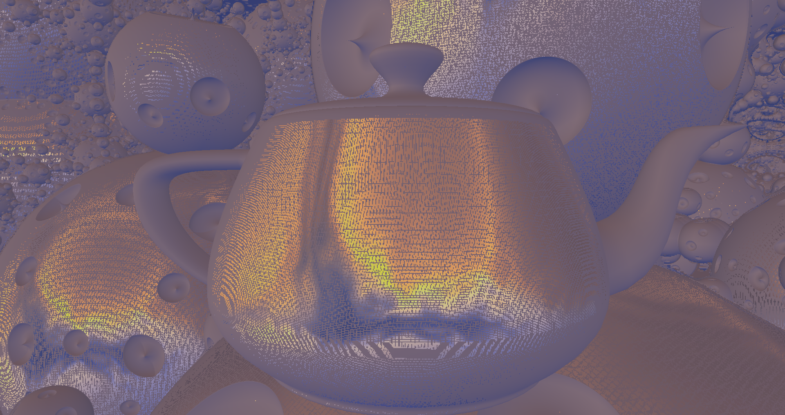
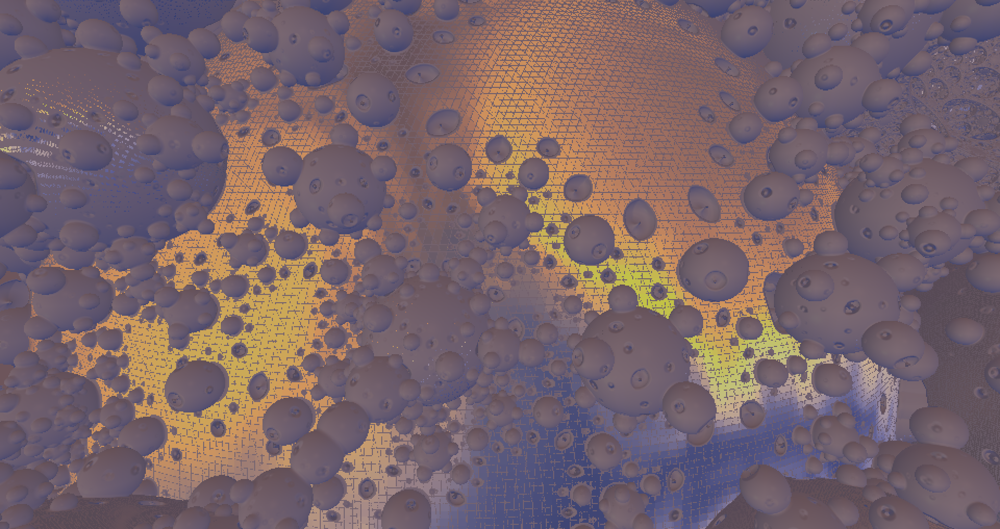

Bananaft
- I’m looking into PBRLitSolid.glsl and can’t figure out how it changes the blurriness of Cubemap texture on materials with different roughness. I thought, it should select a particular mip level, but according to shader code it does not:
finalColor += cMatEnvMapColor * textureCube(sEnvCubeMap, reflect(vReflectionVec, normal)).rgb;
- I’m getting artifacts while trying to draw blurred cubemap. In deferred lighting mode I have a quad pass which reads normal and draws sky reflections into framebuffer.
vec3 reflcol = textureCube(sEnvCubeMap,normal,16.).rgb;
What I’m getting looks like biggest MIP is leaking:

